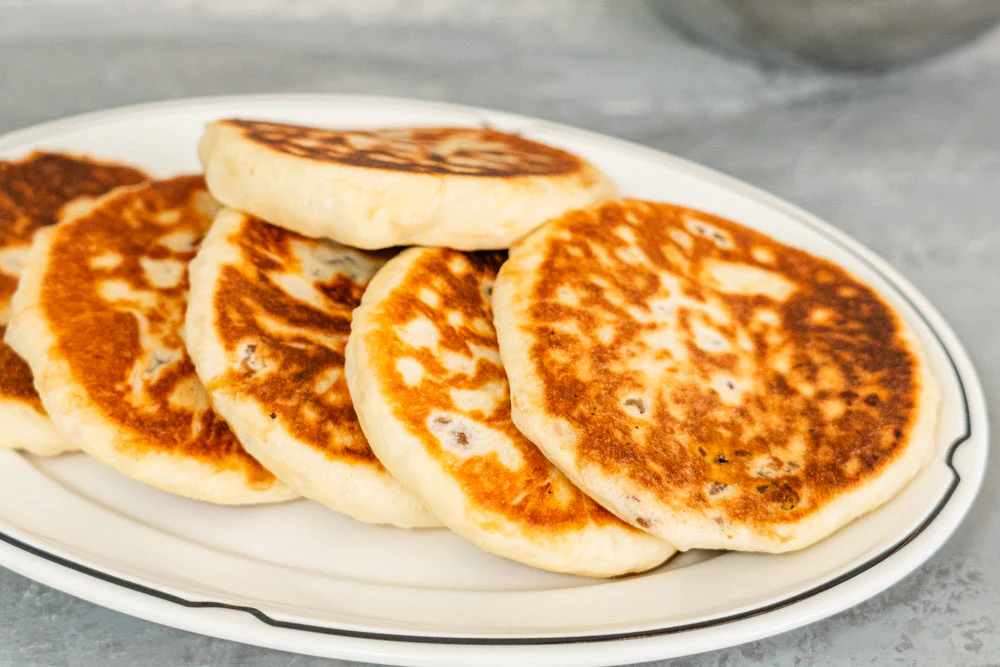

Oi Muchim (오이무침) Korean Spicy Cucumber Salad

The Ingredients You Need Are:
- 2 Korean or 1 English cucumber
- ½ tsp salt
- 1½ tbsp gochugaru (Korean chili flakes)
- 1 tbsp soy sauce
- 1 tbsp rice vinegar
- 1½ tsp sugar
Cooking Instructions
- Slice cucumbers and sprinkle with salt. Let sit 10 to 15 min, then drain and squeeze out water.
- Mix seasoning: gochugaru, soy sauce, vinegar, sugar, sesame oil, garlic, scallion, sesame seeds.
- Toss cucumbers with the seasoning until well coated
Gyeran Mari (Korean Rolled Omelette)

The Ingredients You Need Are:
- 3–4 eggs
- 1 tbsp milk or water (optional, for fluffiness)
- 1 tbsp finely chopped carrot
- 1 tbsp finely chopped scallion
- Salt to taste
- Oil for cooking
Cooking Instructions
- Beat eggs with a pinch of salt, milk (optional), and mix in veggies.
- Heat a non-stick pan over medium-low, lightly oil it.
- Pour a thin layer of egg mixture. When it’s half set, start rolling it gently.
- Push roll to one side, add more egg mixture, repeat the roll.
- Continue until all egg is used.
- Cool slightly, slice, and serve warm or cold.
Korean Spicy Ramen Noodles

The Ingredients You Need Are:
- 1 pack instant ramen (like Shin Ramyun or similar)
- 2 cups water
- ½ tsp gochugaru (Korean chili flakes) – optional for extra heat
- 1 egg (optional)
Cooking Instructions
- Boil water, add ramen noodles and soup base.
- Add veggies, gochugaru, and kimchi if using.
- After 2 minutes, crack in the egg (don't stir if you want it poached).
Baechu Kimchi (Korean Napa Cabbage Kimchi)
The Ingredients You Need Are:
- 1 medium Napa cabbage
- ¼ cup salt (for salting cabbage)
- 1–2 cups water
Cooking Instructions
- Cut cabbage into quarters, then bite-sized pieces. Soak in water and salt for 1–2 hours, tossing occasionally. Rinse and drain well.
- Make paste by mixing gochugaru, fish sauce, sugar, garlic, ginger, and veggies in a bowl.
- Mix paste with cabbage thoroughly (use gloves!), making sure everything is coated.
Patbingsu (Korean Shaved Ice with Sweet Red Beans)

The Ingredients You Need Are:
- 2 cups shaved ice (or finely crushed ice)
- ½ cup sweetened red beans (pat)
- ¼ cup condensed milk
Cooking Instructions
- Shave ice into a bowl (use a machine or crush finely).
- Top with red beans, fruits, and rice cakes.
- Drizzle condensed milk generously.
Hotteok (Korean Sweet Filled Pancakes)

The Ingredients You Need Are:
- 1 cup all-purpose flour
- 2 tbsp sugar
- ½ tsp salt
Cooking Instructions
- Make the dough: Mix flour, sugar, salt, and yeast. Add warm water and oil. Mix and knead lightly. Cover and let it rise for 1 hour.
- Make filling: Mix brown sugar, cinnamon, and chopped nuts.
- Divide dough into 4 balls. Flatten each, place some filling in the center, and seal into a ball.